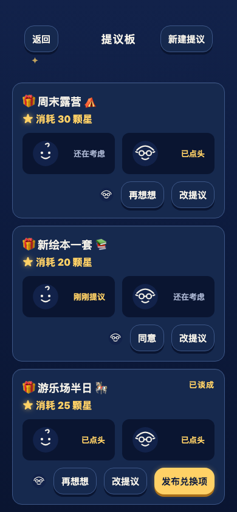
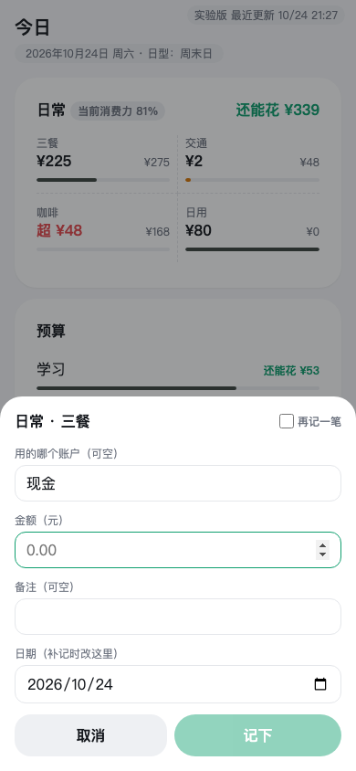

Independent Practice · 2026
AI-native products,
one human + an agent team.
Selected side projects. Senior UX/UI designer at BMW by day, solo product owner of an AI-agent development team by night. Live products, real users (my family), engineering discipline.
How I work
A one-human product studio: I own intent and final decisions; AI agents run PM, design, development, and QA. The discipline layer around them is the actual design work.
Methodology built on Matt Pocock's open-sourced ai-dev-tools skills framework, publicly credited in the repos.
Star Quiz 星星答题



The product
A family learning app: kids answer quizzes, earn stars, and redeem them for real-world rewards negotiated on the proposal board, so motivation is co-designed with the kid, not imposed. A practice engine, not a testing tool. Adaptive difficulty, no judgement.
The contract that ships it
Spec as contract
Interrogated, ticketed, accepted one by one before merge
Language governance
Glossary with explicit avoid-lists (CONTEXT.md)
Decision archaeology
18 ADRs, rejected alternatives preserved
Studio vs showroom
Private mess; public repo is an allow-listed projection
Most AI UX work today is chat interfaces. This project tackles the harder problem: designing the interface between human intent and machine execution, with specs, vocabulary, acceptance, and audit trails.
Pocket Budget 口袋账房



The product
A local-first budgeting PWA answering one question: "how much can I spend today, and should I buy this?" Bookkeeping, reports, and sync are deliberately out of scope.
Four kinds of money
Typed by where you record it. The entry point is the classification:
Daily 日常
What a normal day costs. Soft signals, no hard limits
Budget 预算
How much is left. Derived at render, never stored
Fixed 固定
Paid or not. A status, not a flow
Transfer 走账
The record of a fact, not spending
Recent iteration — 24 Oct 2026
A pace impossible without the AI-agent team and the agentic coding & designing flow I built.
More from the studio
Edge-docked AI-session sidebar. Shelved, with a restart playbook written.
Life goals as debuggable systems: quests, evidence, iteration loops.
Journals, projects, memory, config. Running since April 2026.
Household ledger with audit trails, the proving ground for Pocket Budget's schema.